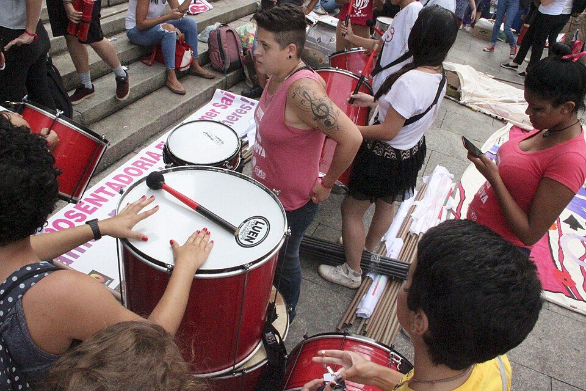
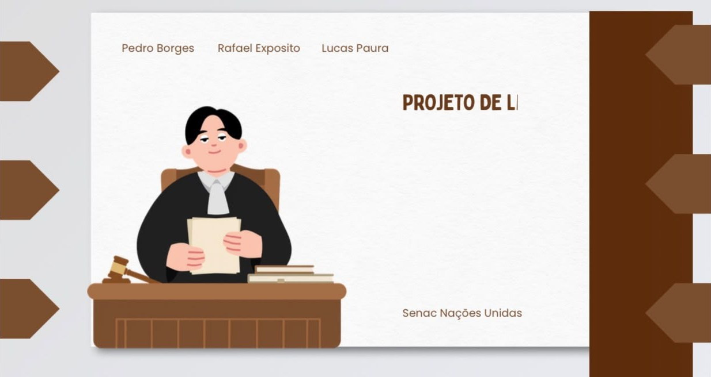

.jpg){kind=link}
O que estudei
- Opressões estruturais
- Opressão de gênero
- Leis e políticas públicas
Opressão estrutural é a que está no funcionamento da sociedade, nas regras e nas oportunidades. Não depende da atitude de uma pessoa só, e por isso é mais difícil de enxergar.
A opressão de gênero aparece na diferença de salário entre homens e mulheres e na violência contra a mulher.
Uma lei pode mudar parte disso, mas precisa dizer o que vai ser feito, quem é responsável e como será fiscalizado.
Atividades e trabalhos
- Cartaz Manifesto: Opressões Estruturais
- Atividade Final: Projeto de Lei
O cartaz sobre opressão de gênero tem textos, dados e músicas de Duquesa, Nanda Tsunami, Ajuliacosta e Ebony.
O projeto de lei foi feito em trio e seguiu a estrutura de um texto legal.
Evidências da aprendizagem
O cartaz e a capa do projeto de lei.


Minha reflexão
O cartaz precisava chamar a atenção, e o projeto de lei precisava ser formal. São dois jeitos bem diferentes de falar de um problema social.